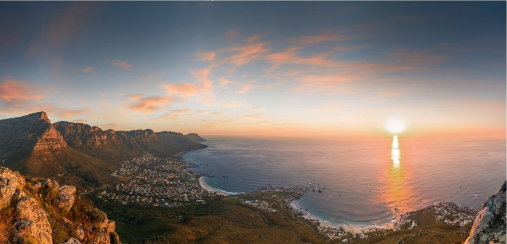

You will arrive in one of the world’s most beautiful cities. Situated in the Cape between dramatic rocky mountains, and the beautiful Cape Coast, there is so much to do and see in this scenic, bustling city. From your stunning boutique hotel, you will explore all that Cape Town has to offer. From hiking or getting a cable car up Table Mountain for stunning panoramic views, eating at one of the city’s world renowned restaurants, shopping in trendy boutiques, or walking around the Kirstenbosch Botanical Gardens. A short boat ride to Robben Island will show you where South Africa’s hero and one of the world’s most incredible leader’s, Nelson Mandela spent 27 years in hard labour.
View from Lion’s Head of Camps Bay, Table Mountain in the background.
A short, beautiful drive from Cape Town will take you to the winelands. Depending on your personalised itinerary this will vary but in this case a beautiful mountain lodge in Stellenbosch will be your home for the next 3 nights. There is something so unique about the Cape Winelands, think South of France but with more dramatic African landscapes. Your time here will be spent in true luxury. From Delicious food and wine, relaxing by the pool, to gorgeous walks and hikes you will leave the Western Cape relaxed, rejuvenated and ready for your South African Safari!
Goregous views from Delaire Wine Estate Lodge
From Cape town you will fly North to the Sabi Sand Private Game reserve. Beautiful woodland savannah, riverine forests, rocky outcrops and vast plains borders the famous Kruger National Park. Wildlife viewing here is top notch and your are highly likely to see all of the big 5 pretty easily without crowding of other vehicles. Leopard populations here are very high giving you a chance to see these illusive predators on your safari. My favourite thing about private game reserves in South Africa is the true exclusive, secluded feel it gives your safari experience. Your stunning lodge will be one of the very few in the reserve meaning very few other visitors in the area. Spend your days here on game drives, relaxing by the pool, eating delicious food and much more.
Family disagreement!
Time to head back to the city for your last day of exploring or relaxing post-safari. Whether you head to nearby Joburg or back to Cape Town, spend your last night wining and dining and reminiscing about your incredible Safari and get ready for some serious safari blues! Just a heads up - the only cure is another safari!
Now lets get planning your personalised South African adventure!
sweet leopard cub in Sabi Sand reserve.